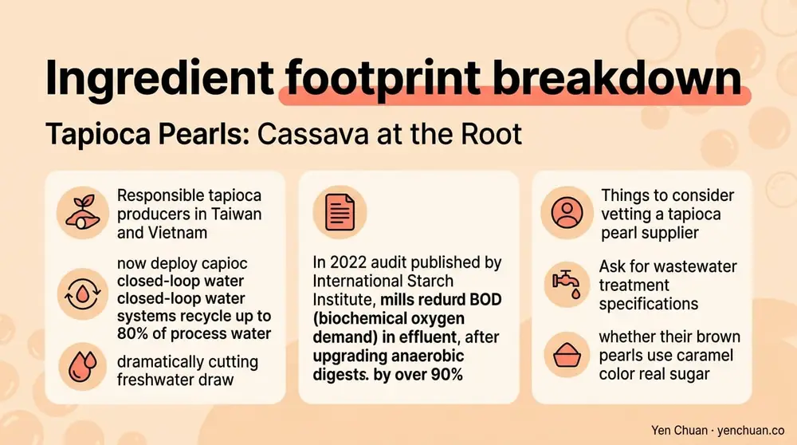
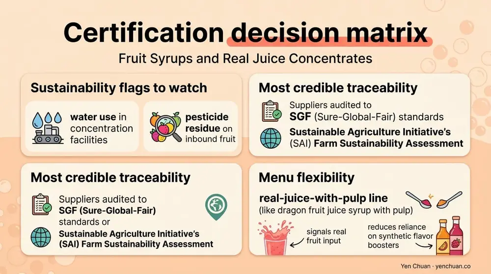

Articles / Business & sourcing
Sustainable Bubble Tea Ingredient Sourcing Guide
2026-04-27 · Industry Trends, Sourcing

Most sustainability conversations in bubble tea start and end with packaging — compostable cups, paper straws, reusable lids. Packaging matters, but it represents only a slice of a drink's total footprint. A 2023 life-cycle study of ready-to-drink tea by the Carbon Trust found that ingredients and agriculture contribute roughly 55-65% of a typical beverage's greenhouse gas emissions, while primary packaging rarely exceeds 12%. For boba shop owners serious about sustainable bubble tea ingredients, the real leverage sits inside the cup — in the tapioca, the tea leaves, the creamer, and the syrups. This guide walks through how raw-material sourcing shapes your environmental footprint, which certifications actually mean something, and how to source eco friendly boba without blowing up your cost structure.
Why Raw Materials Outweigh Packaging
Bubble tea ingredients travel long distances, pass through energy-intensive processing, and often rely on crops with significant land and water footprints. Cassava, the source of tapioca starch, is grown primarily in Southeast Asia on roughly 26 million hectares globally according to FAO data. Tea cultivation — from Taiwan to Sri Lanka to Kenya — requires careful land management to prevent soil erosion and biodiversity loss. Palm-derived creamer, a workhorse of shelf-stable milk tea, is tied directly to deforestation concerns in Indonesia and Malaysia.
Shifting 10% of ingredient purchasing toward responsibly sourced equivalents typically delivers a larger footprint reduction than swapping every plastic cup for PLA. The math is uncomfortable for operators who have invested heavily in packaging optics, but it's what the data shows. Sustainability credibility in 2026 increasingly lives in ingredient traceability, not in the straw.
Tapioca Pearls: Cassava at the Root
Cassava is a resilient crop that tolerates poor soil and irregular rainfall, which makes it a relatively low-input starting material. The sustainability risk lies downstream in starch processing — wastewater management, energy use during drying, and the coloring agents added to black pearls.
Responsible tapioca producers in Taiwan and Vietnam now deploy closed-loop water systems that recycle up to 80% of process water, cutting freshwater draw dramatically. A 2022 audit published by the International Starch Institute documented mills that reduced BOD (biochemical oxygen demand) in effluent by over 90% after upgrading anaerobic digesters. When vetting a tapioca pearl supplier, ask for wastewater treatment specifications and whether their brown pearls use caramel color from real sugar versus synthetic caramel IV.

For operators comparing raw material options, our guide on Black vs White Tapioca Pearls: Manufacturing Differences and Sourcing Tips breaks down how coloring, starch modification, and drying methods differ between the two main pearl families.
Tea Leaves: The Certification That Matters
Tea is where certification landscapes get dense. Rainforest Alliance, Fair Trade USA, and the Ethical Tea Partnership each audit different pieces of the chain — biodiversity and farmer livelihoods for Rainforest Alliance, price floors and social premiums for Fair Trade, and working-condition baselines for ETP. None of them cover everything, but any of them beats uncertified bulk.
Taiwan's tea industry operates on a different model. Family-scale gardens in Nantou and Alishan produce limited harvests with traceable provenance, often under the TAP (Taiwan Agricultural Products) traceability system administered by the Council of Agriculture. For high-tier milk tea menus, sourcing a single-origin Taiwanese tea with a QR-traceable production record delivers a sustainability story customers can actually verify on their phones.
The trade-off is price. Certified Rainforest Alliance Assam typically runs 15-25% above conventional bulk, and premium Taiwanese teas can sit at two to four times commodity pricing. Menus absorb this by reserving certified teas for signature drinks and using standard grades in mixed beverages where tea is not the hero.
Dairy, Creamer, and the Palm Oil Question
Non-dairy creamer built on refined palm oil is the most common milk tea base in Asia, and palm oil is the single most contentious ingredient in the bubble tea supply chain. The Roundtable on Sustainable Palm Oil (RSPO) issues three certification tiers: Identity Preserved, Segregated, and Mass Balance. For boba operators, Segregated is the practical sweet spot — fully traceable to RSPO-certified plantations without the cost premium of Identity Preserved.
The World Wildlife Fund's 2024 Palm Oil Buyers Scorecard noted that certified sustainable palm oil now covers 20% of global production but only 12% of actual B2B beverage purchases. The gap is demand, not supply. Operators who switch to RSPO creamer can make a specific, quantifiable sustainability claim — something "eco-friendly" packaging branding cannot match. Our deep-dive on RSPO-certified milk powder and the companion piece on RSPO versus non-RSPO creamer cost and quality cover the math in detail.
Dairy creamers and fresh milk carry their own footprint — roughly 3 kg CO2e per kilogram of liquid milk per a 2023 FAO report — but they avoid the land-use-change emissions tied to palm expansion. The cleanest path for many menus is a mixed strategy: RSPO-certified non-dairy for shelf-stable SKUs and locally sourced dairy for fresh-milk drinks.
Fruit Syrups and Real Juice Concentrates
Fruit syrups and juice concentrates sit downstream from agriculture, which makes them harder to trace but just as important. The biggest variable is fruit origin. Mango, passion fruit, and lychee are often concentrated in-country before export, which cuts shipping weight by up to 80% versus whole fruit and reduces per-unit emissions.
The sustainability flags to watch are water use in concentration facilities and pesticide residue on inbound fruit. Suppliers audited to SGF (Sure-Global-Fair) standards or verified under the Sustainable Agriculture Initiative's (SAI) Farm Sustainability Assessment offer the most credible traceability. For menu flexibility, consider a real-juice-with-pulp line such as our dragon fruit juice syrup with pulp — pulp content signals real fruit input and reduces reliance on synthetic flavor boosters.

Building a Procurement Scorecard
A practical ingredient sustainability scorecard doesn't need to be complex. Five questions cover most of the ground:
| Question | What to Ask For |
|---|---|
| Origin traceability | Country + region + mill or farm ID where possible |
| Certification status | Specific scheme (RSPO, Rainforest Alliance, TAP, SGF) |
| Water and energy data | Process water recycling %, energy source mix |
| Transport distance | Export port → import port kilometers |
| Third-party audits | Most recent audit date and issuing body |
Suppliers that can answer all five without hedging are the ones worth building a long-term relationship with. Those who deflect or respond with vague "eco-friendly" language are signaling that the traceability isn't there yet.
Cost Impact and Menu Strategy
Sustainability sourcing usually adds 8-18% to ingredient COGS when done across the board. Few operators can absorb that directly. The working pattern we see across Yen Chuan's global customers is a tiered menu approach — certified, traceable ingredients in premium drinks that carry a 15-25% price premium, and conventional-but-responsible sourcing in core menu items. Customers pay for specificity; they do not pay for generic "eco" labels.
A small chain in Melbourne, for example, shifted its signature oolong-based drinks to single-origin Taiwanese tea and RSPO Segregated creamer in 2024, raised those drinks' prices by AUD $0.80, and saw signature-drink mix grow from 22% to 34% of revenue within two quarters. The core menu stayed on conventional ingredients at unchanged pricing. Total ingredient footprint dropped an estimated 19% based on the chain's internal calculation.
About Yen Chuan
Yen Chuan has been at the heart of Taiwan's bubble tea industry for over 20 years, supplying premium powders, syrups, tapioca pearls, and tea leaves to thousands of boba shops worldwide. With an in-house R&D lab and a commitment to quality ingredients, Yen Chuan is more than a supplier — we're your partner in the boba business. Our sourcing team maintains direct relationships with RSPO-certified creamer producers, Taiwanese tea gardens operating under TAP traceability, and tapioca mills with documented wastewater treatment — so when you ask the hard sustainability questions, we have specific answers, not marketing copy.
Ready to Build a More Sustainable Menu?
Looking for sustainable bubble tea ingredients backed by real traceability data? Browse our catalog or get in touch with our sourcing team — we'll walk you through certification options, cost scenarios, and sample shipments from Taiwan.
Authority Citations
- Carbon Trust — Beverage Life Cycle Assessment Guidance, carbontrust.com
- Food and Agriculture Organization (FAO) — Cassava Production Statistics, fao.org
- Roundtable on Sustainable Palm Oil (RSPO) — Certification Standards, rspo.org
- World Wildlife Fund — 2024 Palm Oil Buyers Scorecard, wwf.org
- Rainforest Alliance — Tea Certification Criteria, rainforest-alliance.org
Frequently Asked Questions
Q: What makes bubble tea ingredients sustainable? A: Sustainable bubble tea ingredients combine traceable origin, credible third-party certification (RSPO, Rainforest Alliance, TAP), documented water and energy practices, and responsible agricultural inputs. Packaging is part of the picture but typically accounts for under 15% of a drink's footprint, while ingredients and agriculture contribute more than half.
Q: Is RSPO certification worth the cost for boba shops? A: RSPO Segregated certification usually adds 5-12% to creamer cost and gives operators a specific, verifiable claim about deforestation-free sourcing. For shops positioning themselves on sustainability or entering markets like the EU where buyers scrutinize palm oil, the premium typically pays back through pricing power and retention.
Q: Are Taiwanese tea leaves more sustainable than bulk Assam or Ceylon? A: Taiwanese teas under the TAP traceability system offer farm-level origin data that bulk commodity teas rarely match. They cost 2-4x more, so most operators reserve them for signature menus while using certified mainstream teas for core drinks. Both approaches can be sustainable if the certification is real.
Q: How do I verify a supplier's sustainability claims? A: Ask for specific documentation — certificate numbers, audit dates, farm or mill IDs, and wastewater or energy data. Reputable suppliers will share this on request. Vague language like "eco-friendly" or "green sourcing" without supporting paperwork is a red flag.
Q: Does switching to sustainable ingredients raise menu prices significantly? A: Going fully certified across every SKU typically adds 8-18% to ingredient COGS. Most successful operators use a tiered approach — certified, traceable ingredients in premium signature drinks at a 15-25% price premium, and responsibly sourced conventional ingredients on the core menu to protect margin.